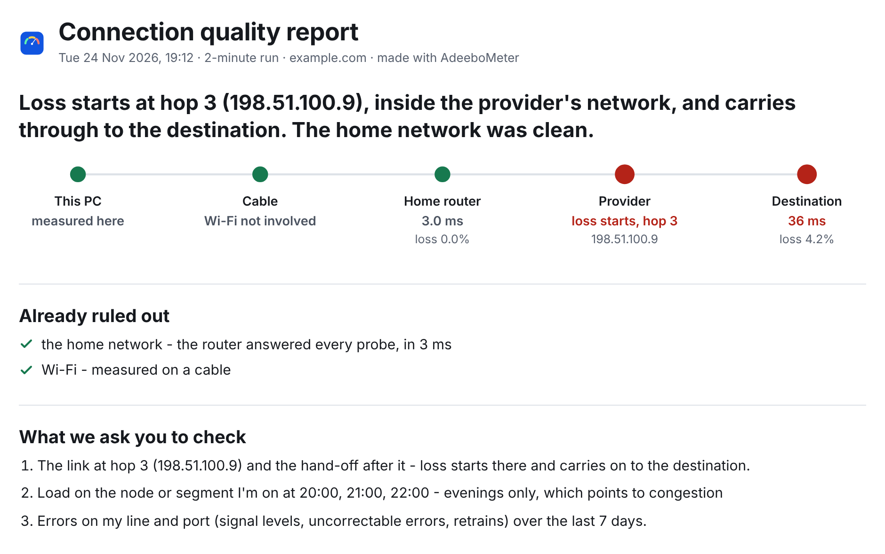

How to show your ISP where packet loss starts
When your connection starts dropping packets, run Report for my ISP in AdeeboMeter. It measures your home router and the path to a destination, then saves a report you can share with your internet provider.
Run the report while the problem is happening
- On Windows, open Toolbox and search for Report for my ISP.
- Enter a hostname or IP address for a service you’re having trouble reaching. You can also select a game you’ve added.
- Choose a 1-, 2-, or 5-minute run. If possible, repeat the test over Ethernet to check whether Wi-Fi is involved.
- Open the generated report. Review it before sharing, then attach it to your support ticket if your provider accepts HTML. You can also send a screenshot of the summary.
What to show support
Start with the date, time, and affected service. Point to the router and destination results. A router along the route can ignore some test packets and still forward traffic. Loss that continues to the destination is a stronger clue.

If the issue comes and goes, save one report during the problem and another when the connection is working normally. Include when each test ran and whether you used Wi-Fi or Ethernet.